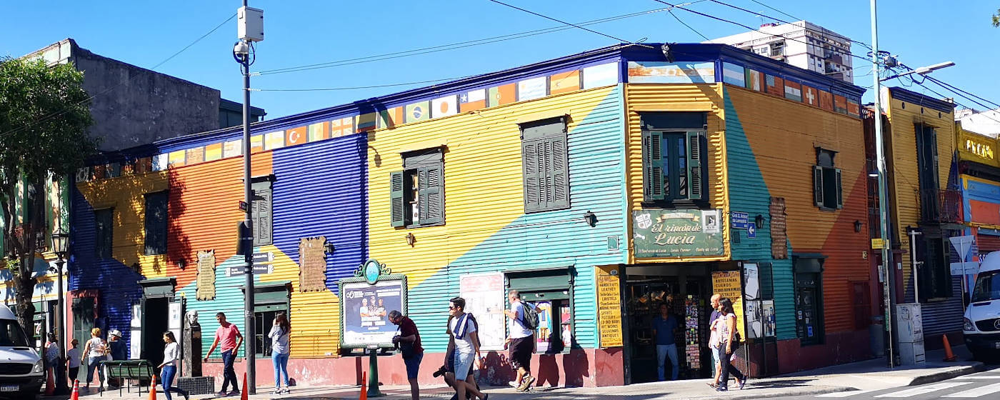
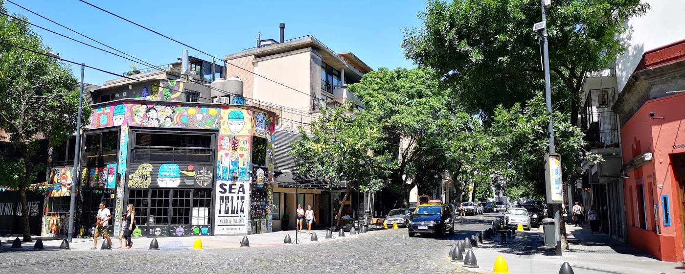

Argentiniens Hauptstadt erleben
Buenos Aires in 4 Tagen
Buenos Aires ist eine pulsierende Großstadt, in der eine Vielzahl von Kulturen zusammentreffen. Die vielen Gesichter der Stadt kann man mit dem hier genannten Reiseverlauf innerhalb von vier Tagen erkunden. Somit Kein langes Suchen auf vielen verschiedenen Homepages, sondern einfach diesen Plan für dich übernehmen und die Höhepunkte von Buenos Aires erleben.

Überblick Vier Tage in Buenos Aires

Tag 1: Besichtige das Teatro Colón am Morgen und mache die Free Walking City Tour am Nachmittag, am Abend empfiehlt es sich ein typisches Asado zu probieren
Tag 2: Mache die Free Walking Recoleta Tour am Morgen und im Anschluss erkunde den berühmten Friedhof Recoleta
Tag 3: An diesem Tag besuche die Nachbarschaft „La Boca“ mit seinen bunten Häuser und spaziere danach in den Stadtteil San Telmo mit seiner malerischen Markthalle
Tag 4: Entdecke die Graffitis von Palermo, esse eine Stück Chocotorta im Café Pani und lasse den Tag im Park Rosedal ausklingen
Optional
Nur am Montag: Besuche das Konzert „La Bomba del Tiempo“ im Kulturzentrum Konex
Nur am Sonntag: Schlendere über den Markt in San Telmo in der Straße Defensa
Anreise
Buenos Aires hat zwei Flughäfen. Der internationale Flughafen Buenos Aires-Ezeiza, der Verbindungen in die ganze Welt anbietet, liegt 30 km außerhalb der Stadt. Es gibt keinen Anschluss des Flughafens an das Bahnsystem, jedoch bietet das Busunternehmen Tienda León** regelmäßige Busse in Richtung Innenstadt an. Es gibt zwei Verkaufsschalter innerhalb des internationalen Ankunftsbereiches und das Ticket kann mit Kreditkarte bezahlt werden. Der Vorteil des Services von Tienda León** ist, dass man zuerst zu einem zentralen Busbahnhof in der Stadt gebracht und von dort mit einem Auto bis zu seiner Unterkunft gefahren wird. Die Kosten dafür belaufen sich auf 490 ARS (Stand Januar 2020).
Der Flughafen Buenos Aires-Jorge Newbery liegt direkt in der Stadt, bedient allerdings primär nationale Verbindungen innerhalb von Argentinien. Auch dieser Flughafen ist nicht am Bahnnetz angeschlossen, sodass es sich empfiehlt ein Taxi zu seinem Zielort zu nehmen. Die Taxipreise für Verbindungen innerhalb der Stadt sind günstig, sodass ein Taxi vom Flughafen nach Palermo im Schnitt 300 ARS kostet (Stand März 2020).
Reisezeit
Buenos Aires ist ein gutes Reiseziel das ganze Jahr über. Der Sommer ist sehr heiß und schwül, sodass die Einwohner in den Monaten Januar und Februar vermehrt die Stadt verlassen. In dieser Zeit kann der Spaziergang durch die Stadt auch für einen selbst sehr schweißtreibend werden. Der Herbst und Frühling lassen bei zwanzig bis dreißig Grad an den deutschen Hochsommer erinnern. Im Winter sind die Tage kurz, die Sonne geht schon um sechs Uhr am Abend unter, doch das Wetter ist mild und es gibt immer mal ein paar Tage, wo die Temperatur über die zwanzig Grad klettert.
Unterkunft
Die Auswahl an Unterkünften in Buenos Aires ist überragend und für jedem ist das passende dabei. Eine besonders gute Lage für eine Unterkunft ist in den Stadtteilen San Telmo und Palermo, welche viele Restaurants und Bars, sowie einen guten Anschluss an das öffentliche Nahverkehrssystem, bieten.
Ein gutes und sauberes Hostel in San Telmo ist das America del Sur Hostel Buenos Aires**, welches auch Aktivitäten anbietet. In Palermo empfiehlt sich das Malevo Muraña Hostel** mit einem schönen Innenhof, in dem ein kostenfreies Frühstück im Preis inbegriffen ist.
Sollte man ein Privatzimmer suchen empfiehlt sich AirBnB. Die Preise für Apartments mit Küche und Balkon liegen im Schnitt bei 30 Euro pro Nacht.
Kosten
Auf Grund der stark schwankenden Währungssituation in Argentinien ist es schwer Kostenkalkulationen zu machen. Obwohl Buenos Aires eine Metropole der Welt wie Paris, London oder Rom ist, sind die Preise in Buenos Aires für europäische Verhältnisse günstig. Eine Übernachtung im Hostel kostet circa 15 Euro und ein einfaches AirBnB bekommt man für 25 Euro pro Nacht. Ein gutes Essen im Restaurant mit Getränk bekommt man für fünf bis zehn Euro. Bei den Free Walking Touren sollte man ungefähr zehn Euro geben und die anderen geführten Stadtspaziergänge kosten jeweils 700 ARS (Stand März 2020). Insgesamt kann man mit 160 Euro vier wundervolle Tage in der Hauptstadt von Argentinien verbringen.
Tipps über Buenos Aires
Hole kein Geld am Geldautomaten ab, sondern schicke dir selbst Geld über Western Union. Der Wechselkurs ist deutlich besser.
Hole dir eine Sube Card um mit dieser das öffentliche Nahverkehrssystem zu nutzen. Die bekommt man in jeder U-Bahnstation.
Eine Übersicht aller U-Bahnlinien findest du hier.
Die Sube Card kann man auch in anderen Städten in Argentinien nutzen.

Reiseverlauf Vier Tage in Buenos Aires

Tag 1: Teatro Colón und Free Walking City Tour
Morgens: Besuche das berühmte Teatro Colón
Gebaut zum Beginn des zwanzigsten Jahrhunderts im Stil des Eklektizismus ist das Teatro Colon ein Prunkbau im Zentrum der Stadt. Ein Saal ist komplett in Gold gehalten und die Akustik ist so fein, dass es bezüglich der Akustik zu den fünf besten Konzertsälen der Welt zählt. Für Opernliebhaber ist ein Besuch Pflicht und für alle anderen ist zumindest eine Führung durch das Gebäude ein Erlebnis.
Es wird um 11 Uhr, 13 Uhr und 15 Uhr eine Führung auf Englisch angeboten. Auf Spanisch starten Führungen alle 15 Minuten. Die Führung dauert ungefähr eine Stunde und man bekommt das Foyer, den goldenen Saal und den Opernsaal gezeigt. Der Eintritt beträgt 1400 ARS (Stand Juni 2020). Beim Ticketkauf bekommt man gesagt, wann die nächste mögliche Tour für einen startet. Bei großem Andrang kann es vorkommen, dass man erst eine Tour mehrere Stunden später zugeteilt bekommt. Alle Informationen zur Führung findet man hier.
Die U-Bahnlinie D hat einen Halt direkt am Theatro Colón an der gleichnamigen Station Tribunales - Teatro Colón. Von Teatro Colón kann man auf einen zwei Kilometer langen Spaziergang zum Nationalkongress laufen.
Nachmittags: Mache die Free Walking City Tour (Start 15 Uhr)
Die City Tour zeigt die Stadt von ihrer historischen und politischen Seite und führt vom Nationalkongress zum Plaza de Mayo. Auf dem Weg werden wichtige historische Persönlichkeiten wie Evita Peron vorgestellt, sowie die Kontroversen der Geschichte der Stadt aufgezeigt.
Die Tour wird von Strawberrytours** und Free Walks Buenos Aires** in Englisch und Spanisch angeboten. Die City Tour fängt bei beiden Anbietern um 15 Uhr am Nationalkongress an. Mit der U-Bahnlinie A gelangt man zur Station Congreso.
Abends: Probiere dein erstes Asado
Das Asado, welches man daheim auf dem eigenen Grill macht oder in einem Parrilla (Grillrestaurant) bekommt, ist einer der Höhepunkte der argentinischen Kultur. Die großen Rindfleischstücke werden auf einem Grill über einem Feuer aus Holz zubereitet. Für Vegetarier empfiehlt sich ein Provoleta, den typisch argentinischen Grillkäse, zu probieren.
In Abhängigkeit deiner Unterkunft ist sind die folgenden beiden Parrillas zu empfehlen.
Palermo: El Secretito** (Palermo Hollywood)
Ein kleiner Nachbarschaftsparrilla mit einem ganz eigenen, urigen Charme gelegen in Palermo Hollywood ist das Secretito (In Google Maps zu finden unter Parrilla Tito). Das ganze Restaurant duftet nach Fleisch und man hat von den meisten Tischen einen guten Blick auf den Grill, sodass man das ganze Grillspektakel mitbekommt. Die Portionen sind groß und eine Portion Fleisch ist für zwei Personen ausreichend, wobei der Preis trotzdem gering ist.
Von der U-Bahnstation Ministro Carranza liegt das Restaurant zu Fuß fünf Minuten entfernt.
San Telmo: Desnivel** (San Telmo)
In San Telmo gelegen ist das Desnivel ein hervorragender Nachbarschaftsparrilla. Schon beim Betreten sieht man das Fleisch und den Grill. Die Preise sind gering und man bekommt bestes argentinisches Rindfleisch in einer gemütlichen Atmosphäre. Das Restaurant, welches in der Calle Defensa liegt, ist besonders zu empfehlen, wenn man eine Unterkunft in San Telmo hat.

Tag 2: Ein Tag in Recoleta
Morgens: Mache eine Free Walking Tour durch Recoleta
Manchmal fragt man sich in Buenos Aires ob man grade wirklich in Südamerika ist oder doch in Europa. Bei der Recoleta Tour wird man bezüglich dessen oft ins Straucheln geraten, wenn man durch Einkaufsstraßen läuft, die der Bon Marche in Paris nachempfunden sind, und Gebäude im italienischen oder englischen Stil begegnet. Auf dieser Tour erfährt man, wie die Oberklasse im 19. Jahrhundert versuchte, die Stadt zu Europäisieren und welches Erbe dies in der heutigen Zeit hinterlassen hat.
Die Tour wird von Strawberrytours** und Free Walks Buenos Aires** in Englisch und Spanisch angeboten. Bei Strawberrytours startet diese um 10:30 Uhr und bei Free Walks Buenos Aires um 11 Uhr jeweils beim Teatro Colón.
Die U-Bahnlinie D hat einen Halt direkt am Teatro Colón an der gleichnamigen Station Tribunales - Teatro Colón.
Nachmittags: Besichtige den Friedhof von Recoleta
Die Touren des Vormittags enden am Friedhof „La Recoleta“, sodass sich im Anschluss dessen Besuch anbietet. Allgemein ist es erstmal seltsam, dass der Besuch eines Friedhofs als eine der Hauptattraktionen einer Stadt gilt. Doch dieser Friedhof ist im Vergleich zu mitteleuropäischen Verhältnissen eine Besonderheit: Es gibt riesige Mausoleen in unterschiedlicher Architektur und eines ist prunkvoller als das Nächste. Zusätzlich ist es die Ruhestätte zahlreicher wohlhabender und prominenter Einwohner der Stadt, wie etwa von Eva Perón (besser bekannt als Evita).
Tag 3: La Boca und San Telmo
Morgens: Besuche die bunten Häuser von La Boca
Ein Stadtteil gesäumt von bunten Häusern, gebaut aus dem Blech abgewrackter Schiffe, der den in Argentinien bekanntesten Fußballclub des Landes beheimatet, ist La Boca. Entstanden ist das Viertel an der Mündung des Riachuelo-Flusses Ende des 19. Jahrhunderts durch italienische Einwanderer. Heute ist die Straße „El Caminito“, der kleine Weg, eine der Haupttouristenattraktionen der Stadt.
Der Stadtteil hat keinen Anschluss an das U-Bahn System. Vom Stadtteil San Telmo aus kann man zum Stadtteil La Boca laufen. Alternativ kann man einen der zahlreichen Busse, die nach La Boca fahren, nutzen. Dieser Stadtteil gilt außerhalb des Gebietes um die Gasse „El Caminito“ als unsicher, sodass man sich primär in dem Touristengebiet des Stadtteiles aufhalten sollte.
Für besonders Geschichtsinteressierte empfiehlt es sich um 11 Uhr der Führung durch den Stadtteil anzuschließen, welche an der Ecke von Magallanes und Caminito startet. Der Preis bei Free Walks Buenos Aires** beläuft sich auf 700 ARS.
Von Viertel La Boca kann man zur Nachbarschaft San Telmo laufen.
Nachmittags: Erkunde das Stadtviertel San Telmo mit seiner Markthalle
Das alte Viertel San Telmo hat ein besonderes Szene-Flair, welches von kleinen Häusern in unterschiedlichsten Architekturstilen geprägt ist. Zusätzlich gibt es eine Markthalle aus dem 19. Jahrhundert mit italienischer Fassade, wo es bis heute einen Marktbetrieb mit Antiquitäten, frischem Obst und Gewürzen gibt. Es gibt auf dem Markt zahlreiche Essenstände, die zum Snacken einladen. Besonders die Empanadas am Stand „EL Hornero“ sind zu empfehlen, welche zu den besten der Stadt zählen.
Der Markt, der direkt am Plaza Dorrego liegt, ist täglich geöffnet, auch wenn nicht immer alle Marktstände offen sind. Mit der Linie C gelangt man zur Station Independencia, von wo es noch ein Kilometer Fußweg bis zum Markt ist.
Tag 4: Ein Tag in Palermo
Palermo Soho ist ein Alternativer Stadtteil, der primär aus niedrigen Häusern besteht und gesäumt von Boutiquen, Restaurants und Bars ist. Das danebenliegende Palermo Hollywood, verdankt seinen Namen den vielen Fernseh- und Film-Produzenten, die in den Neunzigern des letzten Jahrhunderts in die Gegend zogen. Beide Stadtteile sind durchzogen von Straßenkunst und Graffitis. Es lohnt sich, sich in diesen beiden Bereichen des Stadtteiles Palermo in den Gassen zu verlieren, und immer wieder neue Kunstwerke an den Wänden der Häuser zu entdecken.
Wer mehr über die Entstehung der Straßenkunst erfahren möchte, kann einen geführte Stadtführung in Palermo über die Anbieter Strawberrytours** und Free Walks Buenos Aires machen. Diese startet um 15 Uhr am Plaza Serrano und kostet 700 ARS (Stand März 2020).
Eine kleine Pause sollte man im Café Pani** einlegen, welches eine ganz hervorragende Chocotorta verkauft: Einen Kuchen aus einer Dulce de Leche Creme zwischen in Kaffee eingelegten Schokokeksen.
Den Nachmittag kann man dann im nahegelegenen Rosedal verbringen, der Teil des Parks Tres de Febrero in Palermo ist. Er beheimtet 93 verschiedenen Rosenarten und mehr als 18.000 Rosen. Direkt am Rosengarten wurden unter einer ehemaligen Bahnbrücke eine Vielzahl an Restaurants und Bars mit Biergärten eröffnet, in denen man perfekt einen anstrengenden Sightseeingtag ausklingen lassen kann.
Optional (Falls die entsprechenden Tage im Aufenthalt liegen)
Sonntags: Markt in San Telmo
Jeden Sonntag von 10 bis 16 Uhr findet in der Straße Defensa und auf dem Platz Dorrego im Stadtteil San Telmo ein individueller Trödel- und Handwerksmarkt statt. Um den ganzen Markt mit allen seinen angebotenen Kuriositäten von historischen Telefonen, über Blechgeschirr, zu gruseligen Marionetten zu entdecken, bietet sich ein Spaziergang vom Plaza de Mayo zum Hauptteil des Marktes auf dem Plaza Dorrego an.
Montags: "La Bomba del Tiempo" Konzert**
Rhythmus, Schläge, Energie: Man spürt diese vibrierende Stimmung unter freien Himmel und man fängt mit dem Tanzen und Springen an, ohne dass man es bemerkt. Dafür verantwortlich ist eine Gruppe von mehr als zwanzig Musikern, die auf unterschiedlichen Trommeln ein einzigartiges Konzert geben: Das ist „La Bomba del Tiempo“. Die Gruppe gibt jeden Montag um 20 Uhr ein Konzert in der Kulturstätte Konex. Der Eintrittpreis beträgt weniger als 500 ARS und Tickets können an der Abendkasse oder zuvor im Internet über die Homepage gekauft werden.
Mit der U-Bahnlinie B gelangt man über die Station Carlos Gardel zum Kulturzentrum Konex.


Marys Meinung über Buenos Aires
In Verbindung mit einer Argentinienreise lohnt es sich auf jeden Fall ein paar Tage in Buenos Aires einzulegen und die Stadt zu erkunden. Sollte man insgesamt drei Wochen Zeit haben, empfiehlt es sich vier Tage in Buenos Aires zu verbringen und im Anschluss nach Patagonien zu fliegen. Für Menschen mit ganz wenig Zeit sind auch zwei Tage in Buenos Aires ausreichend.


**Das genannte Unternehmen ist eine Empfehlung meinerseits. Ich habe KEINE Gegenleistung von diesem erhalten.